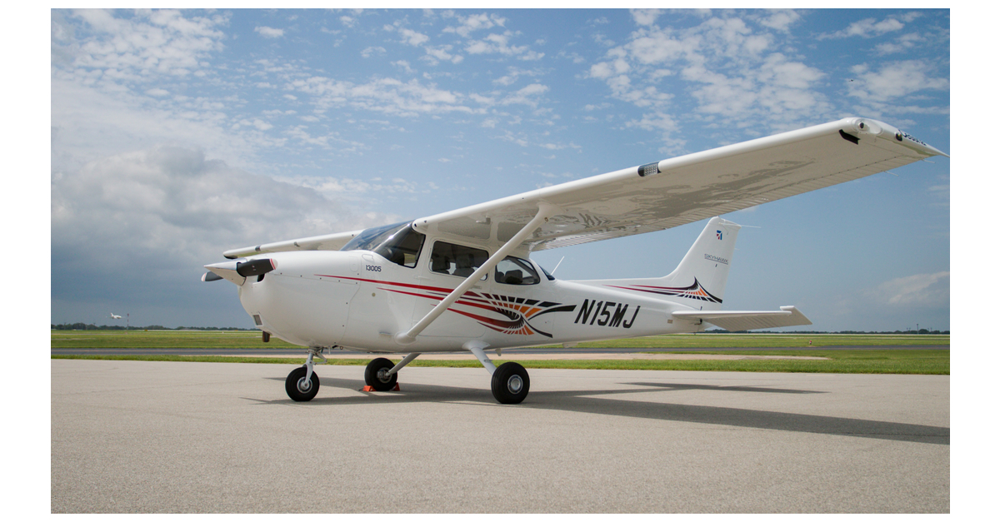

|

|
Cessna 172 Skyhawk Features
- Single-Engine Piston Aircraft: The Cessna 172 is a single-engine, four-seat, high-wing aircraft and one of the most widely produced general aviation aircraft.
- Versatility: The Cessna 172 is used for various missions, including flight training, personal and business transportation, aerial photography, and more. It's suitable for training and recreational flying.
- Reliable Powerplant: Most Cessna 172 models are powered by Lycoming or Continental four-cylinder, air-cooled piston engines known for their reliability and ease of maintenance.
- High-Wing Design: The Cessna 172's high-wing design offers excellent visibility for both the pilot and passengers and contributes to the aircraft's stability.
|
The Cessna 172 Skyhawk is an American four-seat, single-engine, high-wing, fixed-wing aircraft manufactured by the Cessna Aircraft Company. First flown in 1955, it's one of the most successful and enduring aircraft models in history, with more than 44,000 units built.
The Cessna 172 evolved from the Cessna 170 with tricycle landing gear. It was introduced in 1956 and has remained in production to this day.
The aircraft's success was evident early on, with over 1,400 units built in its first full year of production in 1956.
The Cessna 172 has become a staple in general aviation, serving a wide range of purposes for decades.
BUY IT NOW AND GET AN EXCLUSIVE DISCOUNT OF $75
|